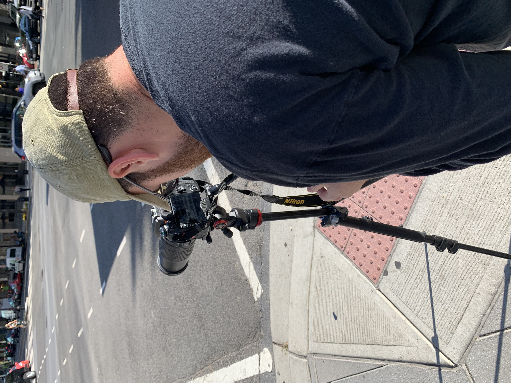

Videography Experience

I spent a semester doing stories in Washington D.C. for one of my journalism classes at the University of Maryland. I did three stories overall, two of which were news stories and one was a silent story for use on social media platforms. I both shot and edited the stories using Premiere Pro. Videos were shot using DSLR and broadcast cameras.